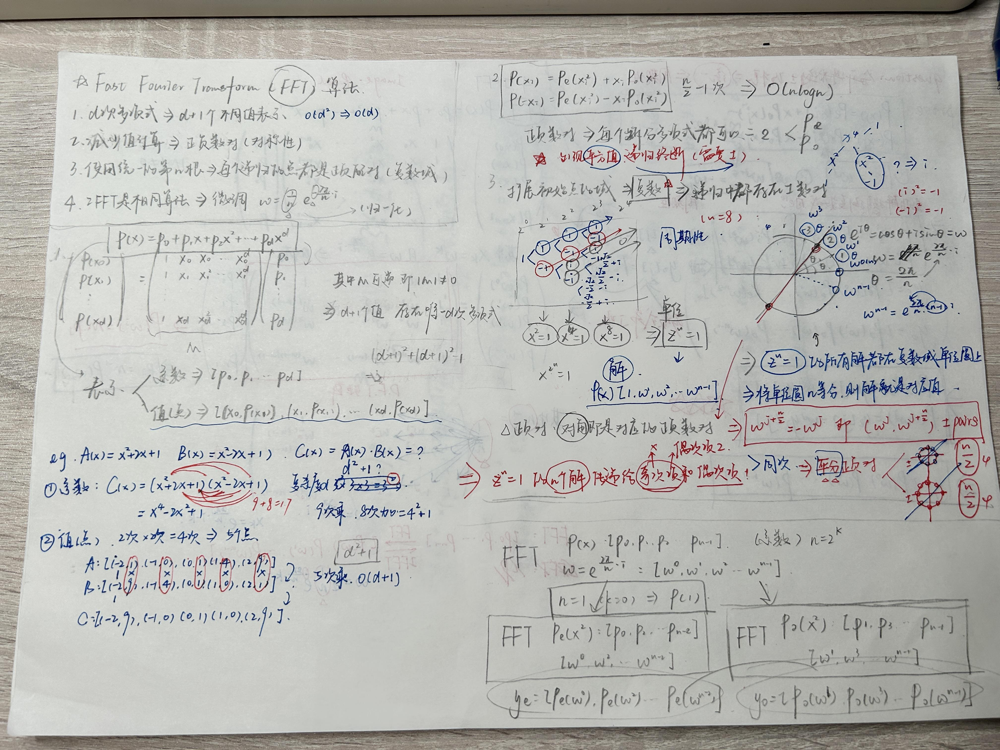

An early idea behind sp-DBA was to apply block activation to Fourier-space updates. I wanted to understand the transform itself, so I tried writing an FFT library and comparing it with FFTW. What drew me in was how Cooley–Tukey breaks a large transform into smaller ones that fit together so neatly.
I started with recursive decomposition, then worked on iterative butterflies, bit-reversal reordering, precomputed twiddle factors, and memory layout. On the larger power-of-two two-dimensional grids in my early CPU tests, the optimized version came close to FFTW. Comparing these versions helped me understand how arithmetic and memory access share the cost of a transform.
Handwritten working notes
